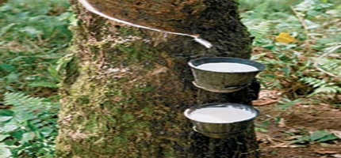

Curiculum Vitae
1. PERSONAL INFORMATION
- Name : Bagus Eka Sasmitha
- Mailing Address : Prm. Kalimas Indah I / 11 Blitar 66121
- Contact Number :
- 0341-569346
- 08125261609
- Place & Date of Birth : -----, ------, ----
- Sex : Male
- Marital Status : Single
- Religion : Moslem
- Nationality : Indonesian Edit
2. EDUCATION BACKGROUND
| No. | School | Year |
|---|---|---|
| 1. | State Elementary School Kaligondo 1 Genteng | 1993 – 1999 |
| 2. | State Junior High School 1 Genteng | 2000 – 2003 |
| 3. | State Senior High School 2 Genteng | 2004 – 2007 |
| 4. | Technic Electro Department State University Of Malang | 2011 – Now |
3. ORGANIZATION
- ARMADA SOCICIETY 2010-now
- PETANI KARET LAMPUNG RAYA 2007-Now
4. ABILITY
- EXCEL 2007
- ACCESS 2007
- PHP
- HTML
- CSS
- JAVASCRIPT
Pohon Karet

Pohon karet para pertama kali hanya tumbuh di Amerika Selatan, namun setelah percobaan berkali-kali oleh Henry Wickham, pohon ini berhasil dikembangkan di Asia Tenggara, di mana sekarang ini tanaman ini banyak dikembangkan; sekarang Asia merupakan sumber karet alami. Lebih dari setengah karet yang digunakan sekarang ini adalah sintetik, tetapi beberapa juta ton karet alami masih diproduksi setiap tahun, dan masih merupakan bahan penting bagi beberapa industri termasuk otomotif dan militer.
Karet hypoallergenic dapat dibuat dari Guayule. Eksperimen awal dari pengembangan karet sintetis membawa ke penemuan Silly Putty. Karet alami seringkali divulkanisasi, seubah proses yang memanaskan karet dan ditambah belerang untuk meningkatkan "resilience" dan elastisitas. Proses vulkanisasi meningkatkan durabilitas dan penggunaan karet dari 1830-an sampai sekarang. Pengembangan sukses vulkanisasi dihubungkan dengan Charles Goodyear. Read More...